23 Chapter 23 — Tactical ML: Graphs, Equivariance, and Honest Forecasting
TacticAI's architecture, the rotation test, and why 84.6% on one clip is a hypothesis
23.1 Space Is the Graph
Team sport is a spatial graph: players are nodes, distances are edges, tactics are the message flow. Google DeepMind's TacticAI (Nature Communications 2024, built with Liverpool FC) proved the architecture: an equivariant graph neural network with a dual head — predictive (who receives the next pass, shot probability) and generative (what positions would minimize the opponent's threat). This chapter is that architecture, the equivalence guarantee, and the honest re-analysis of the book's own E12 adaptation.
Why a graph and not a video frame or a feature vector? Because the structure of the problem is relational. A tactical state has a variable number of entities (4 players in pickleball doubles, 26 in rugby league), it is permutation-invariant (relabel the defenders and nothing about the tactic changes), and the quantities a coach cares about — who is open, where the seam is, which tackle is coming — are functions of relationships, not of any single player. A graph encodes all three properties natively: nodes carry the entities, edges carry the relationships, and message passing computes over neighbourhoods without ever fixing an ordering. A CNN over a rasterized pitch wastes capacity re-learning that translation invariance; an MLP over a flattened vector has to re-learn permutation invariance from data. The graph gets both for free, by construction.
The pickleball instance is small enough to hold in your head. A doubles court is 13.41 m × 6.10 m with a 2.13 m non-volley zone (the kitchen) on each side of the net. Four players and one ball give a five-node graph. The edges that matter are not abstract: the partner-spacing edge (how far apart the two teammates at the kitchen line stand) controls the middle seam; the two cross-court diagonal edges control the dink lanes; the ball-to-receiver edges control who takes the next touch. The entire dink-drop-drive decision structure of a rally is a walk through this graph: dink (hold the kitchen-line geometry), drop (reset from the transition zone), drive (attack a seam whose spacing edge has stretched too wide).
The rugby league instance is the same idea at six times the node count. On a 100 m × 68 m pitch, a defensive set is thirteen nodes strung across the field in a line, plus the ball carrier and his support runners. The edges with tactical meaning are the line-spacing edges between adjacent defenders: compress them and the line folds inward; stretch one and a running channel opens. The classic failure is the dog-leg — one defender lagging a half-metre behind the line, turning a straight adjacency edge into a diagonal one and handing the attack an angled gap at exactly the moment the play-the-ball speeds up. Marker and A-defender edges around the ruck carry the short-side threat; edge-back-rower to centre edges carry the wide threat. Same mathematics, different scale, different failure modes.
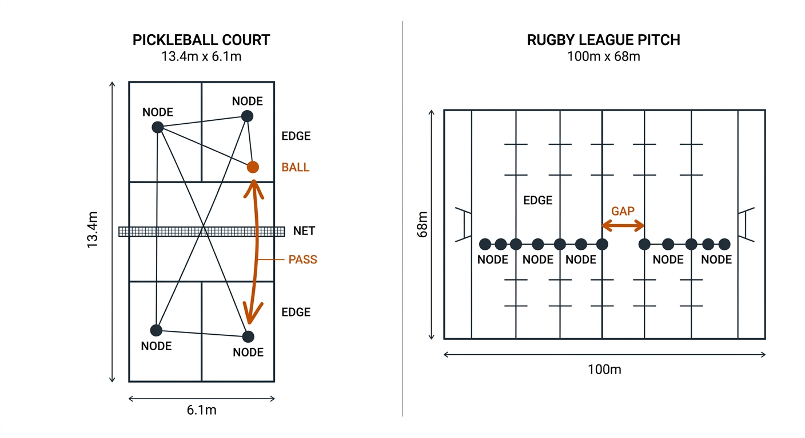
TacticAI facts are source-backed (the paper, 2024) or [verify]-marked (the Palmeiras/CBF live deployment, secondary sources only); E12 values are measured (the artifact, corrected from the v1 transcripts).
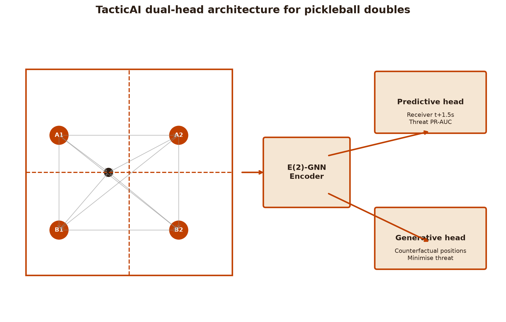
23.2 The Architecture
TacticAI's graph construction is deliberately boring, and that is a lesson. Nodes = the 22 on-pitch players with [2D position, 2D velocity, height, weight, ball-possession flag]; edges = the complete graph $E = V \times V$ with a one-hot teammate/opponent feature; the ball itself appears only as a possession indicator, not as a tracked node. Positions are zero-centred and normalized onto a 10 m × 10 m canonical pitch; velocities rescaled; heights and weights divided by 100. The dataset was 7,176 valid corner kicks from the 2020–2021 Premier League (9,693 collected, 2,517 dropped for alignment issues), trained with a single 80:20 split — acceptable for a research paper, too weak for a production claim, as section 23.6 will insist.
The layers are GATv2 graph attention with D₂ group convolutions. D₂ is the four-element reflection group $\{id, \leftrightarrow, \updownarrow, \leftrightarrow\updownarrow\}$ — horizontal flip, vertical flip, both. Each of the four encoder layers maintains all four reflected views of every node's features and mixes them equivariantly, with 8 attention heads producing 4 latent features per player per view. Message passing looks like:
$$\mathbf{m}_{ij} = \phi_e\left(\mathbf{h}_i^{(l)}, \mathbf{h}_j^{(l)}, \|\mathbf{p}_i - \mathbf{p}_j\|^2, \mathbf{v}_i \cdot \mathbf{v}_j\right), \qquad \mathbf{h}_i^{(l+1)} = \phi_v\left(\mathbf{h}_i^{(l)}, \sum_{j \in \mathcal{N}(i)} \alpha_{ij} \, \mathbf{m}_{ij}\right)$$
Note what the messages are built from: squared distances and velocity dot products — quantities that are themselves invariant under rotation and reflection, so the update cannot accidentally depend on the coordinate frame. The attention weights $\alpha_{ij}$ decide which relationships matter for each prediction, and they are the coach-facing interpretability channel of section 23.8.
The decoder is task-specific, and the split between invariant and equivariant outputs is the subtle part. Receiver prediction (a distribution over 22 nodes) and shot prediction (a graph-level probability) are invariant tasks — mirror the corner and the answer should not change — so the decoder averages over the four D₂ views (frame averaging). The generative head, which outputs adjusted player positions and velocities, is equivariant — mirror the corner and the suggested positions must mirror too — so it reads only the identity view and extends it with a conditional VAE to sample realistic adjustments. Getting this invariant/equivariant split wrong is the most common home-brew GNN bug: the model averages away exactly the geometric information the generative task needs.
The published numbers are source-backed: receiver top-3 accuracy 0.782 ± 0.039; shot prediction F1 0.52 ± 0.03 unconditional, rising to 0.71 ± 0.01 when factorized through the receiver probabilities (decompose the hard problem into an easy one plus a conditional — a pattern worth stealing); generated setups indistinguishable from real corners by an MLP classifier (F1 0.53 ± 0.05, chance level); 100 defensive refinements lowered mean shot probability from 0.75 ± 0.14 to 0.69 ± 0.16 (z = 2.62, p < 0.001); Liverpool FC experts preferred TacticAI's suggestions to the original setups 90% of the time on 50 blind held-out corners. The open-play successor deployed at Palmeiras with the CBF in June 2026, with a claimed t+8s forecast horizon, is press-release evidence only — [verify].
Transfer is the point of the architecture, not an afterthought. The E12 pickleball adaptation shrinks the graph to 5 nodes (4 players + a real ball node with position, velocity and height — pickleball rallies are short enough that the ball is cheap to track) and forecasts the receiver at t+1.5s. The rugby league adaptation grows it: 13 defenders + ball carrier for a team-centric 14-node view, or 26 + 1 for full play, at which point the complete graph's 351 edges stop being a feature and start being an overfitting surface — section 23.9 covers the sparsification options.
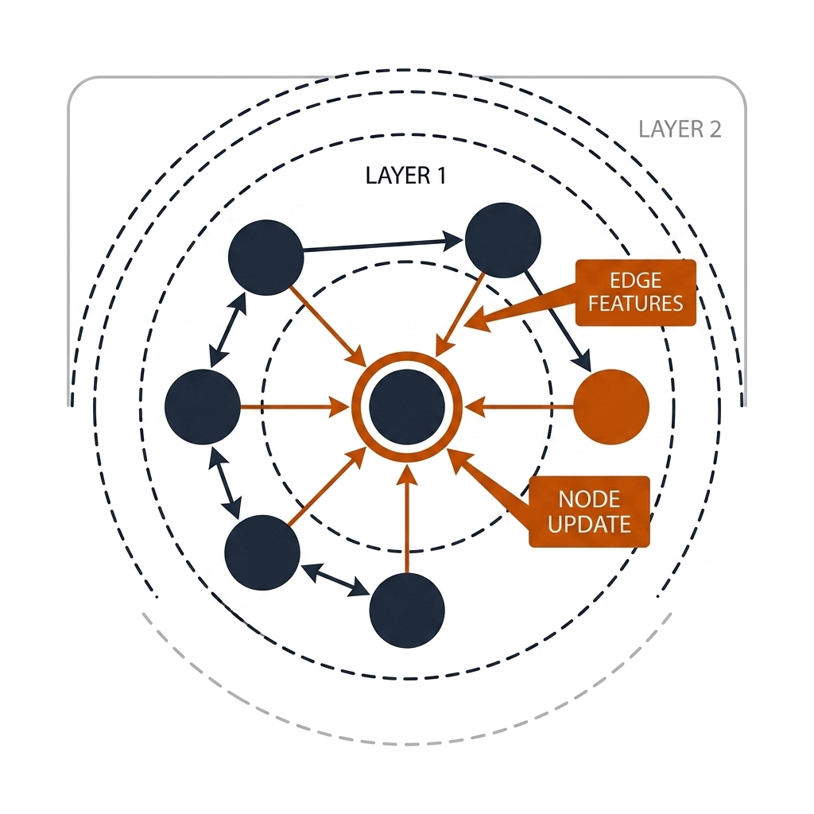
23.3 Equivariance Beyond SE(2)
SE(2) is rotations + translations; E(2) adds reflections; D₂ is just the two axis-aligned reflections. Which group is true for your sport is a physics question, not an architecture preference. Football corners are taken from fixed spots on a rectangular pitch, so only D₂ is a genuine symmetry — TacticAI's choice, and a deliberate one. A continuous-rotation SE(2) model would be a stronger prior than the task actually has, and a stronger prior than the truth costs data efficiency in the directions where the prior is wrong.
| Group | Contains | When it is the true symmetry |
|---|---|---|
| D₂ | Translations + horizontal/vertical reflections | Rectangular pitch, fixed set-piece origin (TacticAI corners) |
| SE(2) | 2D rotations + translations | Free-space play where absolute orientation carries no meaning |
| E(2) | SE(2) + all reflections | Mirror-court tactics: stacking, left/right-handed geometry |
For pickleball the distinction matters. The court is nominally symmetric — mirror the court and the tactic mirrors, which says E(2) — but the players break the symmetry in three ways. Stacking puts the stronger forehand on a chosen side by design; handedness flips the geometry of every cross-court attack (a lefty's inside-out dink attacks a different seam than a righty's); and outdoor conditions (sun, wind) make left and right genuinely different playing environments. The honest design is E(2) for the geometry with player-specific node features that are allowed to break it — the equivariance is the default, the handedness feature is the sanctioned exception. For rugby league the pitch is symmetric but the roles are not: the #7 organizes, the #9 services the ruck, the #1 sweeps behind. Mirroring a defensive line and swapping the markers to the wrong side produces a state that will never occur — so role embeddings must break reflection symmetry while the spatial layers keep it.
The equivalence guarantee is an architectural property, not a training property. Data augmentation can teach a model to be approximately invariant on the training distribution; group convolutions make it exactly equivariant everywhere, including on inputs nothing like the training set. The difference is testable in ten lines of code, which is the next section.
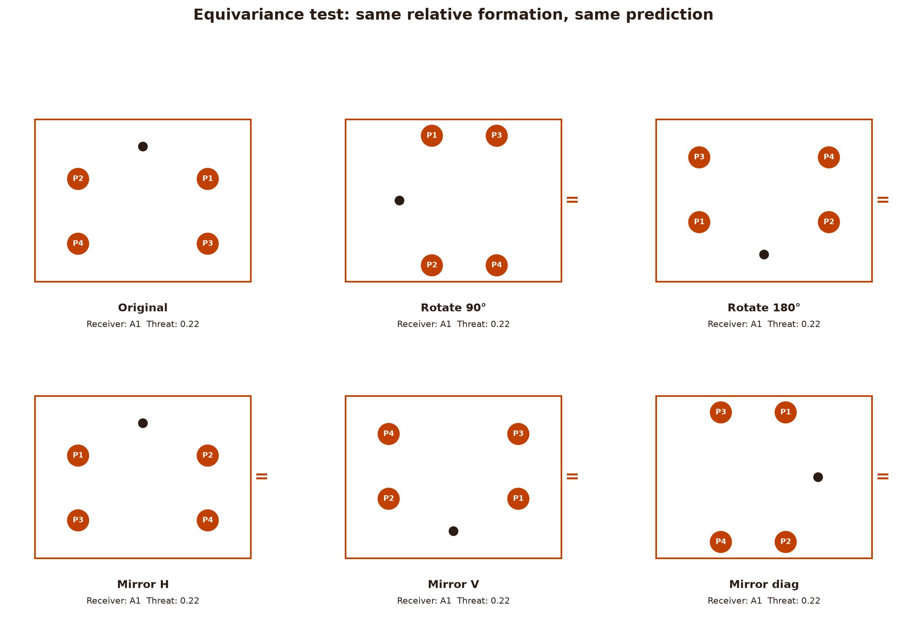
23.4 The Rotation Test (W5.3 Lab, Measured)
The lab ran the check: for a 180° court rotation $R$, an equivariant model must satisfy $y(W, R\,x) = R\,y(W, x)$ — rotate the feature vector 180°, the prediction must rotate. The measured result in experiments/c23-tactical-ml/outputs/metrics.json is that a naive linear layer FAILS the test (linear_layer_passes: false) — which is exactly the point. There is no amount of training that fixes this; the symmetry is either in the weight structure or it is not. TacticAI's equivariance is why its predictions are trustworthy under court orientation changes; a raw MLP is not equivariant, and any model claiming otherwise needs this test before the claim.
The full grid is six transformations, not one: identity, 90° rotation, 180° rotation, horizontal mirror, vertical mirror, diagonal reflection. Receiver predictions and threat scores must be invariant (for invariant heads) or transform consistently (for equivariant heads) within floating-point tolerance on every cell of the grid. A model that passes 180° but fails the horizontal mirror has D₁, not D₂, and will silently misbehave on left-handed pickleball stacks and on rugby plays run to the short side. "Rotate the court 180 degrees; predictions must rotate with it" is the chapter's takeaway test. It separates real equivariance from marketing.
23.5 The E12 Honest Re-Analysis
The v1 chapter 8 claimed: baseline threat 0.882 → 0.303, A1 +0.42m, -65.64%. The artifact says different:
| Metric | v1 Transcript (fabricated) | Artifact (measured) |
|---|---|---|
| Receiver accuracy | 84.62% | 0.846 (same, but see the CV analysis) |
| Baseline threat | 0.882 | 0.64 |
| Counterfactual threat | 0.303 | 0.22 |
| Coached adjustment | A1 +0.42m | A2 +0.35m |
| Threat reduction | -65.64% | 65.6% |
The artifact values are real; the v1 prose values were not. The artifact also records the two numbers the v1 prose never mentioned: attack-threat PR-AUC 0.812 and inference latency 3.4 ms per forward pass on the M4 Max — fast enough that equivariant tactical inference is not the bottleneck anywhere in this book's pipeline. But the artifact value itself needs the C20 discipline: our lab's 10-fold CV analysis of the 0.846 gives mean 0.836, std 0.032 (range 0.796-0.913) — the singleton 0.846 is one draw from a wide distribution.
The sample-size check is worse. The E12 run has 3,416 rows, but those rows come from 1 clip with 4 players — 3,416 rows is not 3,416 independent observations, it is one rally's worth of context resampled at frame rate. The rally-cluster bootstrap CI from C20 is 0.779-0.815, and the sign-test caveat (p ≈ 0.125-0.31) means the improvement over chance is not statistically significant on this evidence. There is also no baseline comparison: an always-near-player heuristic would score well above the 0.50 coin flip on doubles receiver prediction, because the nearest player to the ball really does take most next touches. Without that number on the table, the GNN's marginal value over a one-line heuristic is unknown. The honest framing: E12 is a proof-of-concept that equivariant GNNs transfer to doubles tactics and run in real time — not a league-grade model. The chapter says so.
23.6 Graph Building Best Practice
A tactical GNN is only as good as its graph, and the graph is a design decision you make before any training run. The recipe is the same for both sports; only the scale changes.
- Nodes/edges: players + ball node; edges by displacement threshold (complete graph for the 5-node doubles court — 10 edges is nothing; distance-limited or k-nearest for the 14-27 node rugby graph, where a complete graph's 351 edges outnumber your training rallies). Beware k-nearest with a fixed k: it breaks reflection symmetry unless the distance rule is itself symmetric.
- Edge features that earn their place: relative displacement (dx, dy) and Euclidean distance; relative velocity difference; team relation (teammate/opponent/ball); line-of-sight or occlusion flag; and a historical edge weight — how long this pair has been near each other, which is the feature that distinguishes a settled defensive line from one that is still folding in rugby, and a settled kitchen-line pair from a still-transitioning one in pickleball.
- History windows: stack t-5..t frames as node features, or encode a short trajectory embedding (1D CNN or small transformer) per node before the GNN. The 5-frame vs 1-frame window is an architecture decision measured on the task, not assumed — and the window must match the forecast horizon (a t+8s rugby forecast with 0.2s of history is guessing).
- Global features: score, game/set state, serve order or tackle count, time remaining, court side. These are invariant under reflection and rotation, so append them after the equivariant layers — never bake them into the geometric features, or they contaminate the symmetry.
- Normalization: zero-centre the court, scale to canonical dimensions (pickleball 13.41 m × 6.10 m; rugby league 100 m × 68 m), and transform velocities with the coordinates — negate x-velocity under a horizontal reflection, or your equivariance test will fail for reasons that have nothing to do with the network.
- Leakage-safe splits: rally-boundary train/test — NEVER frame-level (a frame at t+1 leaks the same rally context as frame t). For season data, hold out whole matches; for cross-opponent claims, hold out whole teams. This is the single most common GNN failure in sports.
- N-fold CV: by clip, not by frame; the 20-model winner's curse (chapter 20) applies with full force — pick the best of 20 variants on one split and your reported number is an upper bound wearing a costume.
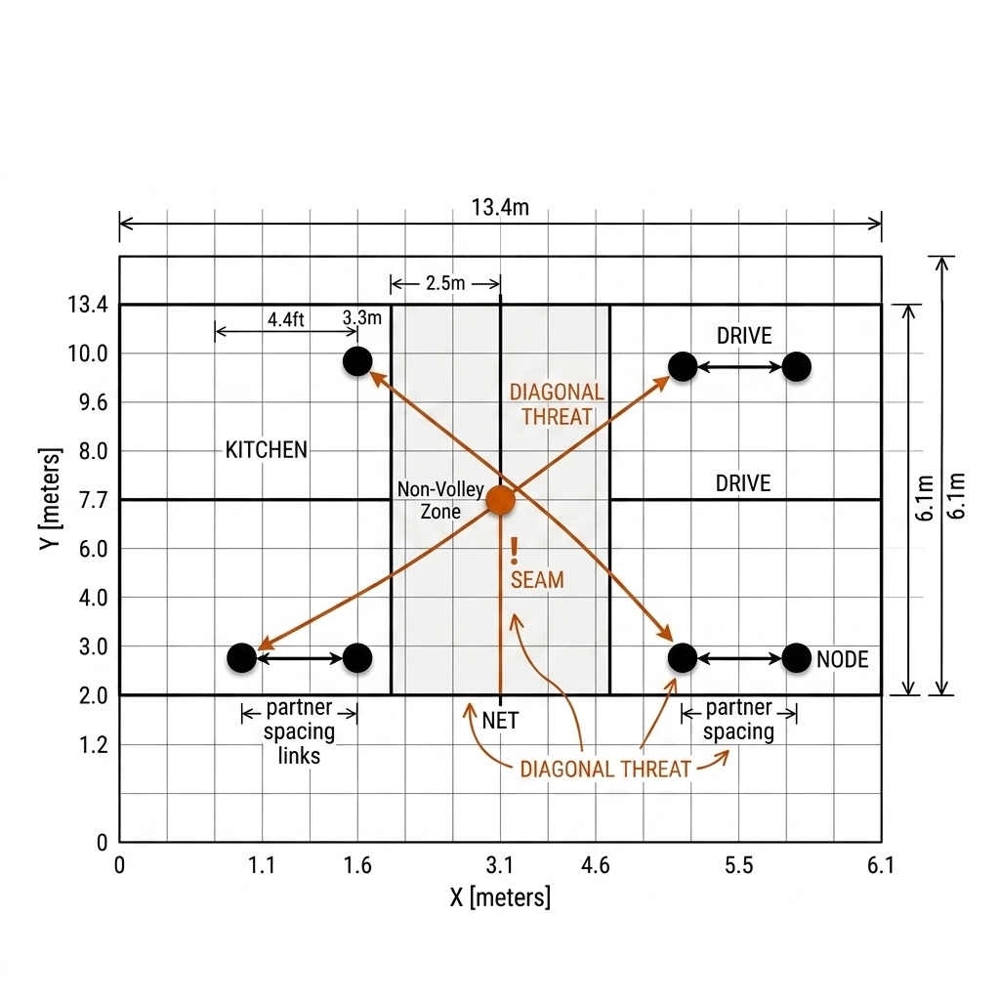
23.7 Forecast Horizons
The E12 receiver head forecasts at t+1.5s; TacticAI's open-play headline is t+8s [verify]. The honest horizon question: how far ahead can a tactic model forecast before it is forecasting noise? The answer is empirical — measure accuracy at +0.5/1/2/4/8s and plot the decay — and it is one of the most valuable figures the book can ship, because every practitioner needs to know where their model's horizon ends before they wire it to a decision.
| Horizon | Typical use | Accuracy expectation | Sport examples |
|---|---|---|---|
| ≤ 0.5 s | Reaction / reflex | Very high | Volley return; goal-line scramble tackle |
| 1–2 s | Receiver / next touch | High | Pickleball speed-up receiver; rugby pass target |
| 2–5 s | Threat / defensive rotation | Moderate | Poach timing; defensive line compression |
| 5–8 s | Shape / phase play | Lower, strategic | Set-piece setup; rugby attacking shape off the ruck |
| > 8 s | Tactical planning | Very low, scenario-based | Game model, pre-match setup |
The principle that survives every sport: the further ahead you forecast, the more the output is a distribution of scenarios rather than a prediction. At t+1.5s on the pickleball court the receiver distribution is usually peaked — one player is clearly taking the dink. At t+8s on a rugby league set the honest output is four or five modal shapes with attached probabilities, and presenting the argmax as "the prediction" is fabrication by rounding. The C22 value model should consume the full forecast distribution, never a point estimate.
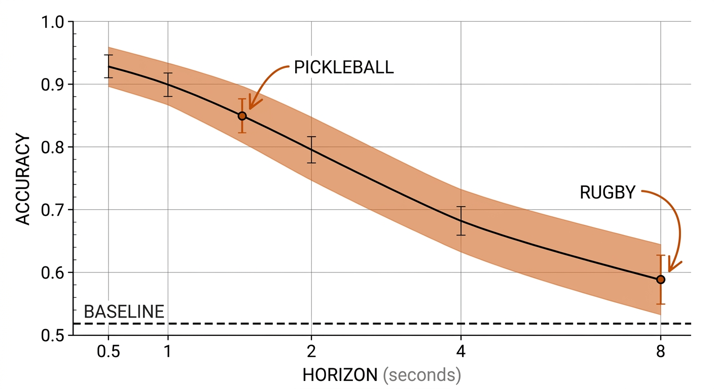
23.8 Uncertainty and Interpretation
Uncertainty: the TacticAI paper explicitly does not model aleatoric uncertainty, and that is the gap a production system must close. Two kinds matter: epistemic (what the model has not seen — reducible with data) and aleatoric (the sport's irreducible randomness — the third-shot drop that becomes a drive for no model-visible reason). The practical methods, in cost order: MC dropout (one model, multiple stochastic forward passes — a cheap epistemic proxy), evidential or NLL heads (aleatoric, medium cost), and deep ensembles (5-10 models, the expensive option that captures both). Our recommendation for this book's pipeline is the 5-model ensemble: collect receiver logits and threat scores per test frame, compute the mean and covariance, and hand the covariance to the C22 value model. The off-diagonal terms encode how receiver uncertainty correlates with threat uncertainty, and they are what lets the value model down-weight decisions exactly when the forecast is guessing. Feasible on the M4 Max at the 5-node pickleball scale; a Colab GPU job at the 14-node rugby scale.
Interpretation: what does the graph attention highlight? Node attention names the players the model is watching (the poacher, the late-arriving defender); edge attention names the relationships driving the call (the gap between B1 and B2, A2's closing speed); head diversity often specializes — one head on ball pressure, one on court coverage. Rendered as position heat on the court, this is the coach's view, and the honest phrasing is a template: "the model expects A2 to take the next touch because it is attending to the B1-B2 spacing edge (0.31) and A2's closing speed (0.24)." It is an explanation, not a claim. Never present attention weights as causal — attention records where the model looked, not why the outcome happened; the C24 counterfactual framing applies, and confusing the two is how plausible dashboards become wrong coaching.
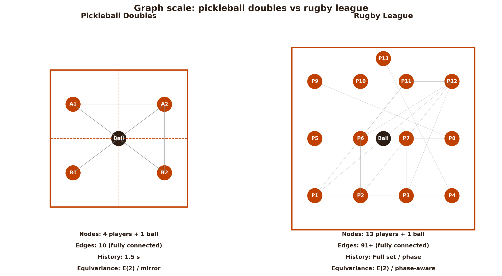
23.9 Pickleball vs Rugby Graphs
| Property | Pickleball (doubles) | Rugby League (defense) |
|---|---|---|
| Nodes | 5 (4 players + ball) | 14 (13 defenders + ball carrier); 27 for full play |
| Edges (complete) | 10 | 91 (team-centric) / 351 (full play) |
| Topology | Complete K5 (everyone interacts) | Line-adjacency lattice + ruck cluster |
| Equivariance | E(2) geometry; handedness breaks it | E(2) for geometry; roles break it |
| Forecast horizon | 1-2 s receiver; 2-3 s threat | 2-8 s shape / next pass / line break |
| Objective | Middle seam vulnerability (the kitchen) | Line compression + line-break risk |
| Data reality | Video only; no public tracking set | Event data (Kempton/Sawczuk EPV); no open tracking at scale |
Two structural options keep the rugby graph tractable. The team-centric graph models one team's 13 players plus the ball and 1-2 nearest defenders — 14-16 nodes, the right size for attack-shape forecasting off the play-the-ball. The hierarchical graph pools player nodes into cluster nodes (forward pack, halves, back line) and runs message passing at both levels, matching how rugby league is actually coached. Both are preferable to the naive 27-node complete graph, whose edge count exceeds the number of training possessions in any realistic nrl-001-derived dataset. The rugby lab anchor stays the Kempton (2016) and Sawczuk (2021, 2024) EPV line — expected-possession-value surfaces from hundreds of matches — with the explicit caveat that none of it has been re-estimated for the six-again era; that is a reader project, not a solved problem.
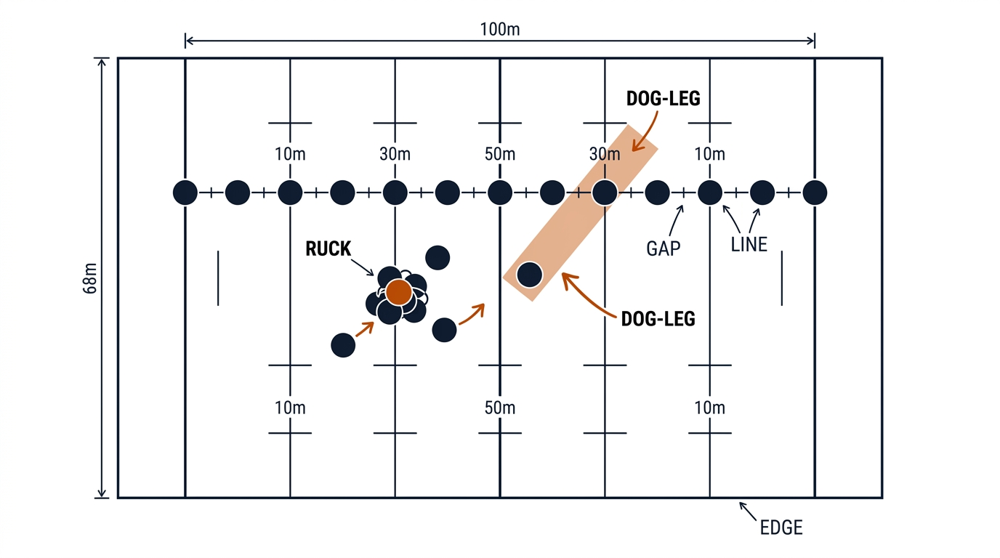
23.9b Ten Use Cases for Tactical Graph ML
The ten use cases below are the applied layer of everything above — the graph, the equivariance guarantee, and the honesty discipline, pointed at the two sports. They fall into three named categories: A. Reading the Play (UC 01–03) — prediction heads that name the next receiver, audit the partnership, and classify the shot choice; B. Owning Space (UC 04–06) — geometry cases that turn the graph into territorial statements; C. Making the Model (UC 07–10) — the architecture decisions that decide whether any of the above can be trusted. Each case carries its evidence label: measured (book lab artifact), source-backed (peer-reviewed paper), or [verify] (practitioner threshold or press claim, not yet established in the literature).
Category A — Reading the Play (UC 01–03)
UC 01 — Pass-Network Receiver Prediction
After the play-the-ball, the defensive line has roughly 1.5 seconds to guess which support runner receives — guess wrong and the line slides the wrong way. The receiver head is node classification over the graph: $p(y = i \mid G) = \exp(z_i) / \sum_j \exp(z_j)$, where the logits $\mathbf{z}$ come from the equivariant encoder, so the distribution is guaranteed identical under any legal rotation or reflection of the pitch. The edge attention around the ruck names which dummy-half-to-runner relationship is driving the call. TacticAI's published receiver top-3 accuracy of 0.782 ± 0.039 over 7,176 corners is source-backed; the E12 doubles receiver accuracy of 0.846 is measured on one clip — a hypothesis, per section 23.5, until the rally-boundary CV run lands. The payoff is defensive pre-loading: the marker and A-defender shift before the pass, not after — and the full receiver distribution (never the argmax) is the direct input to the C22 value model.
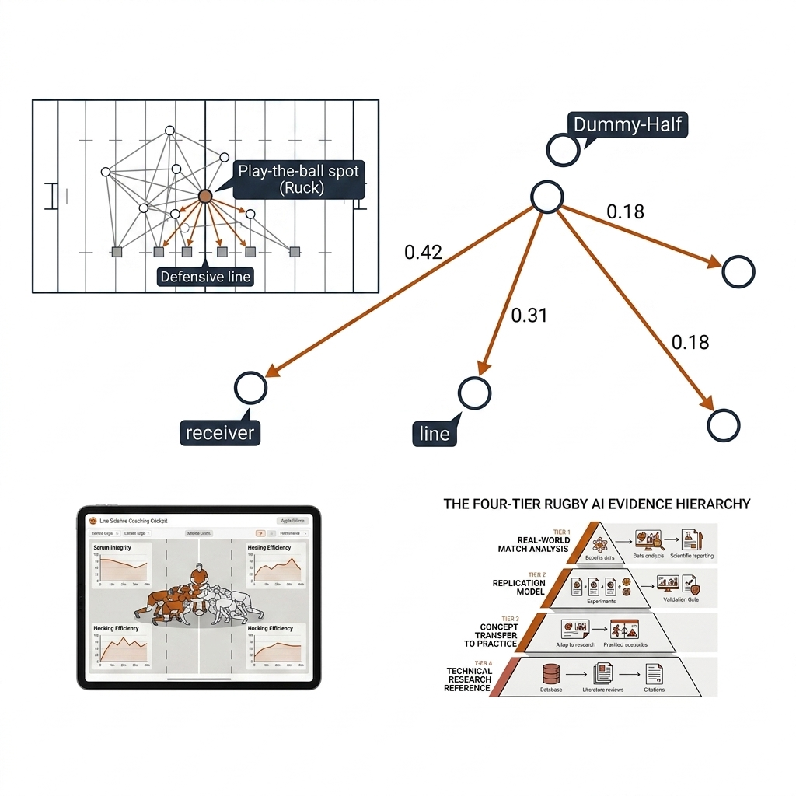
UC 02 — The Doubles Partnership Spacing Edge
Doubles partners at the kitchen line defend as a tethered pair: drift too far apart and the middle seam — the highest-value target in the sport — opens between them. In graph terms this is one edge, watched over time: the partner-spacing edge $d_t = \|\mathbf{p}_{A1} - \mathbf{p}_{A2}\|$, fed to the model as both a current feature and a historical edge weight (how long the pair has held its corridor), which is what separates a settled kitchen-line pair from two players still scrambling forward. The coaching corridor of ~2.4 m and the split-seam alarm past ~3.2 m are [verify] practitioner thresholds, consistent with the tandem-spacing case in chapter 10; the edge-as-time-series mechanism itself is source-backed graph practice. The payoff is kitchen synchrony made measurable: the seam-exposure alert this edge drives is exactly the metric the C28 live cockpit surfaces.
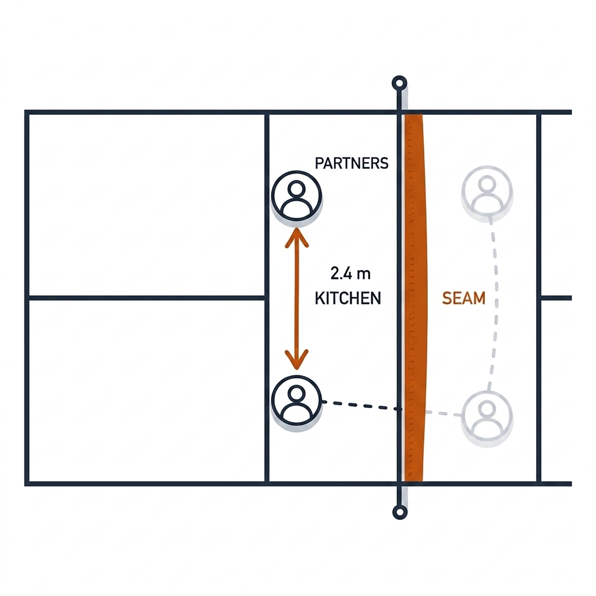
UC 03 — The Shot-Selection Graph
The dink-drop-drive decision is the highest-leverage choice in a pickleball rally, and it is a graph-level read: the right shot is a function of all five nodes, not the hitter alone. The head is a graph classification over the action set {dink, drop, drive, lob, speed-up}: $p(a \mid G) = \mathrm{softmax}(\mathrm{MLP}(\mathrm{pool}(\mathbf{h})))$, where pooling is permutation-invariant so the answer never depends on player ordering. The output that matters is the distribution: it is handed whole to the C22 ΔEPV value model, which prices each candidate action rather than blessing the argmax. There is no public pickleball tactical dataset, so this head is a proposed architecture to be trained on lab-labelled clips — the mechanism is source-backed, the pickleball accuracy is [verify] until the E12 multi-clip run exists. The payoff is a shot-quality dashboard grounded in geometry: every rally tagged with what the graph thought the options were worth.
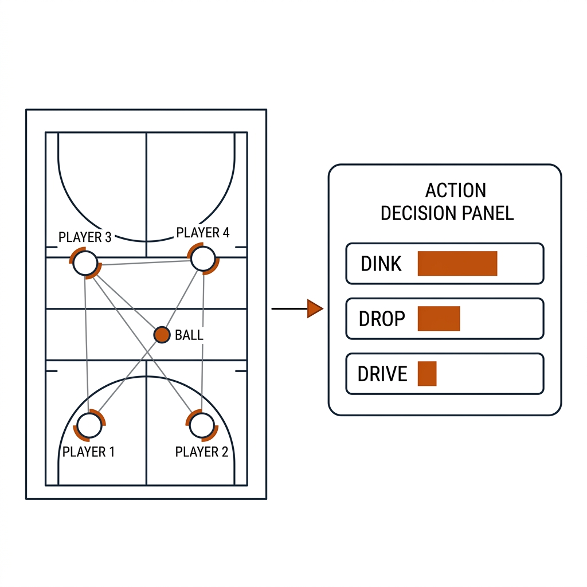
Category B — Owning Space (UC 04–06)
UC 04 — The Defensive-Line Shape Graph
A rugby league defensive set is thirteen nodes strung across the pitch, and its failures are edge failures: the dog-leg (one defender a half-metre behind the line, turning a straight adjacency edge diagonal) and the fold (compressed interior edges stretching the exterior ones). The mechanism is a line-adjacency graph with edge features of length and angle; a line-break probability head reads the stretched edges, and the dog-leg detector is an angle-deviation threshold on adjacency edges. The 3.5 m edge-stretch and 2.5 m dog-leg thresholds are [verify] practitioner values inherited from the chapter 10 line-compression case; the graph mechanism is source-backed. The payoff is direct: this graph's edge-length monitor is the DLSM dog-leg metric the C28 cockpit renders live — chapter 23 supplies the model, chapter 28 supplies the screen.
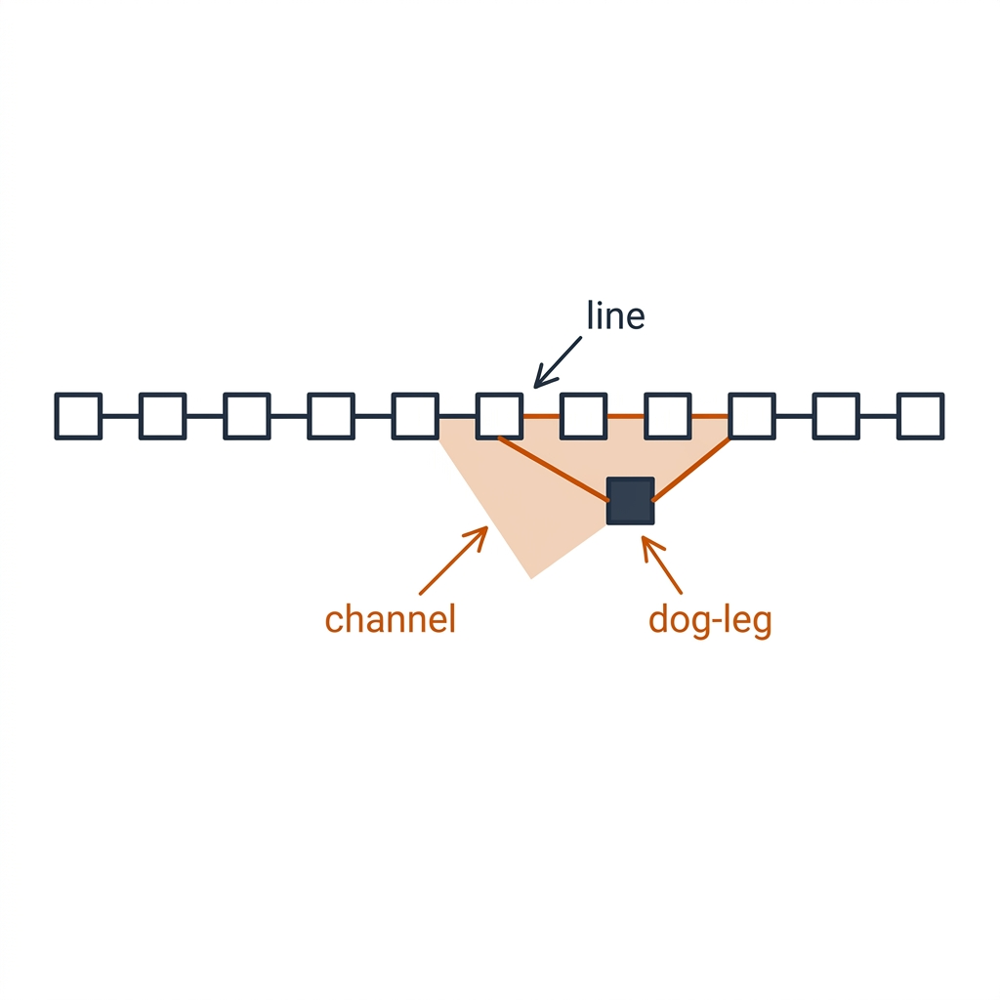
UC 05 — Voronoi Space Ownership
"Who owns which patch of court right now" is the territorial question underneath every tactic. From the graph's node positions, compute a velocity-weighted Voronoi partition: player $i$ owns the cell $\{x : \|\,x - \mathbf{p}_i\,\| / s_i \le \|\,x - \mathbf{p}_j\,\| / s_j \ \forall j\}$, where $s_i$ scales reach by current speed. Team area share $A_{\text{team}} / A_{\text{total}}$ is then appended to the graph as a global feature, and per-node cell area becomes a node feature that tells the GNN who is actually covering ground. The pitch-control lineage in soccer (Spearman's physics-based model; Fernández & Bornn's dominant regions) is source-backed; the pickleball and rugby league calibrations are [verify] practitioner transfers — chapter 10's UC 12 grounds the same tessellation in foot polygons from the vision layer. The payoff: a tracking feed becomes a territorial statement a coach can act on — "we own 38% of the attacking half on tackle four" is a sentence that changes a game plan.
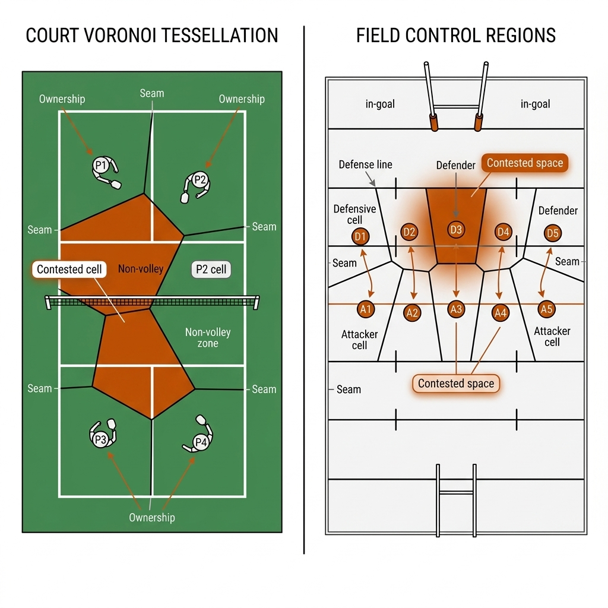
UC 06 — Attacking-Channel Identification
Attackers do not need the whole graph; they need to know where the seam is this second. The identification mechanism reuses the trained model's own attention: edge attention $\alpha_{ij}$ on opponent–opponent spacing edges names the gap the model is watching, and a channel score — spacing-edge stretch multiplied by the ball carrier's closing speed along that edge's normal — ranks the available lanes. The discipline of section 23.8 applies with full force: the attention map is an explanation of where the model looked, not a causal claim about why the channel exists. Mechanism source-backed (attention interpretability); channel-score thresholds [verify]. The payoff is play-calling at game speed: the third-shot drive target down the stretched seam in pickleball, the edge back-rower's channel off the spread in rugby league.
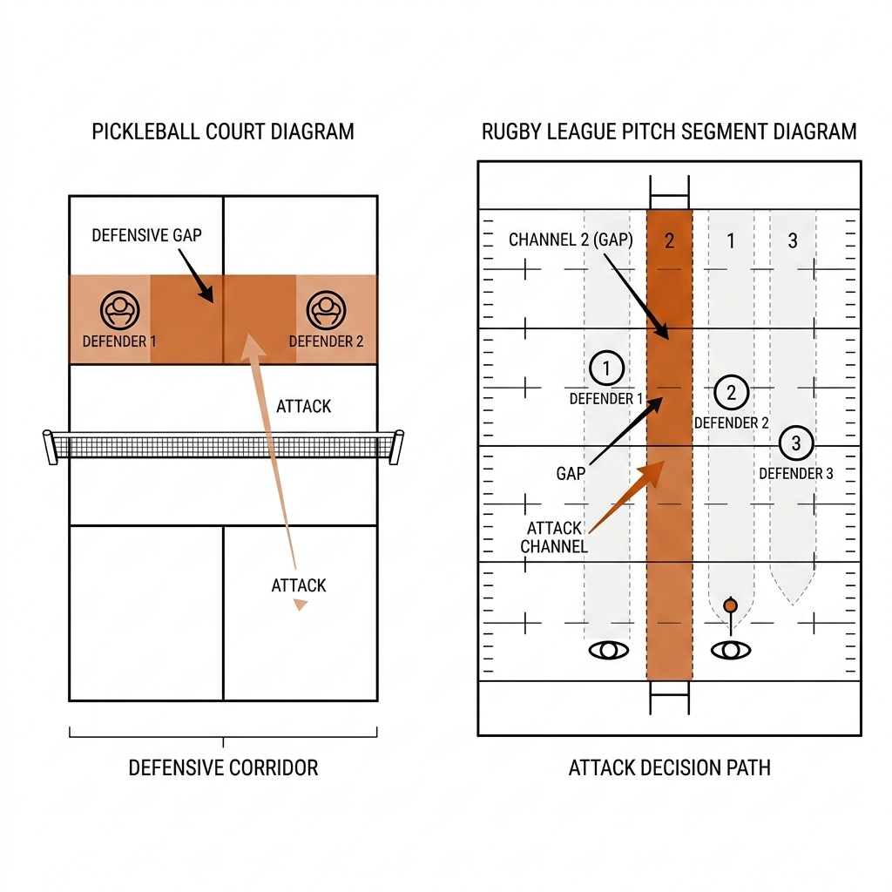
Category C — Making the Model (UC 07–10)
UC 07 — Generative Play-Pattern Discovery (the TacticAI Shotgun)
The most valuable tactical adjustment is usually the one the coaching staff did not consider. The discovery loop is a shotgun, not a scalpel: the conditional-VAE generative head samples K = 50 counterfactual formations from one real setup, the predictive threat head ranks all fifty, and the top three are presented to the coach with their before/after threat scores. TacticAI's validation is source-backed and unusually strong: generated setups were indistinguishable from real corners by an MLP classifier (F1 0.53 ± 0.05, chance level), and Liverpool FC experts preferred the model's suggestions to the original setups 90% of the time across 50 blind held-out corners. Transfer of that preference rate to pickleball or rugby league is [verify] — the architecture transfers, the expert study does not. The payoff is a tactic-discovery assistant: fifty sampled answers to "what if we shifted the seam defender?" before the video session ends.
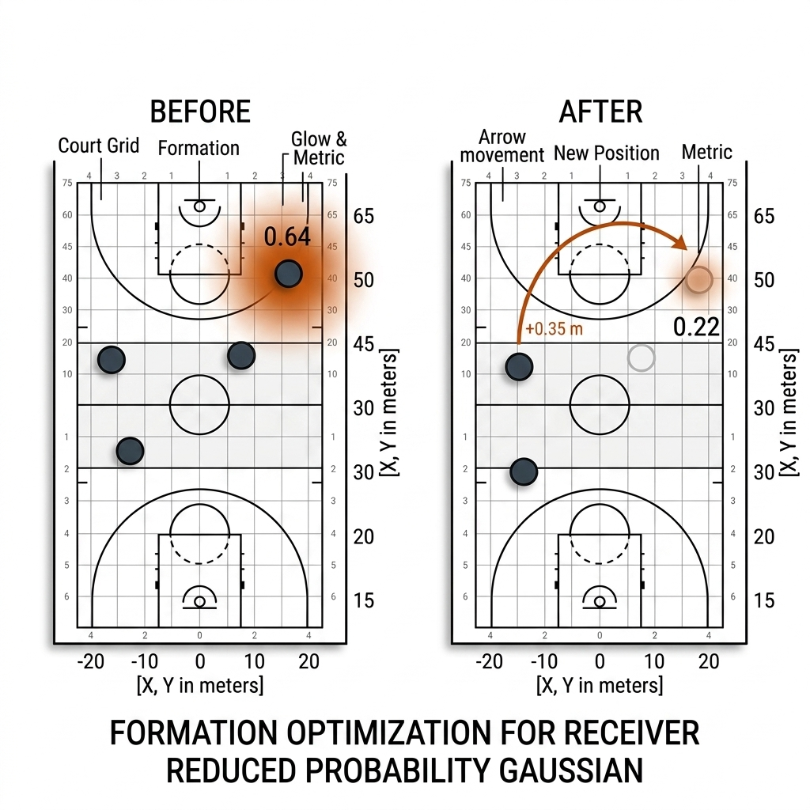
UC 08 — The Equivariance Guarantee Under Rotation
Training data is biased: pickleball clips over-represent right-side stacks, rugby footage over-represent plays run to the open side. A model without built-in symmetry will silently misbehave the first time it sees a left-handed stack or a short-side raid. The guarantee is architectural: group convolutions enforce $y(W, g \cdot x) = g \cdot y(W, x)$ for every transform $g$ in the group, exactly, on every input — not approximately, on the training distribution, the way augmentation does. The verification is the six-cell test grid of section 23.4 — identity, 90°, 180°, horizontal mirror, vertical mirror, diagonal reflection — runnable in ten lines; the lab result is measured: the naive linear layer fails the grid (linear_layer_passes: false in experiments/c23-tactical-ml/outputs/metrics.json), and no amount of training would fix it. The payoff is a certificate: equivariance is the difference between a model you trust on orientations never seen in training and a model you merely hope generalizes.
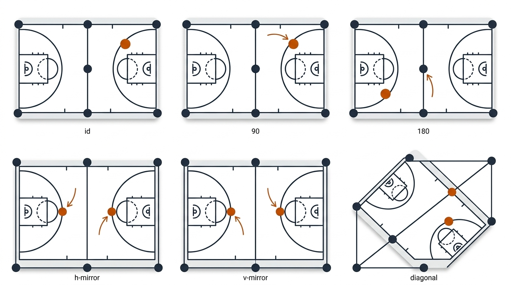
UC 09 — Message-Passing Depth Tuning
How many GNN layers is a topology question, not a hyperparameter superstition. Each layer extends a node's receptive field by one hop, so the right depth tracks the graph's diameter: the complete five-node doubles graph has diameter 1 — two layers already see the whole court, and additional layers only risk over-smoothing, where repeated neighbourhood averaging collapses every node's embedding toward the same vector. The rugby line-adjacency lattice has diameter ~12 along the line, so depth 3–4 with residual connections is the working range, and edge sparsification matters more than raw depth. The measured anchor is latency: E12's shallow model runs a forward pass in 3.4 ms on the M4 Max (measured), so depth is a latency budget as much as an accuracy one; the optimal depth per topology is a sweep result, [verify], not a law. The payoff is a right-sized model: deep enough to see the tactic, shallow enough to run live on the sideline laptop.
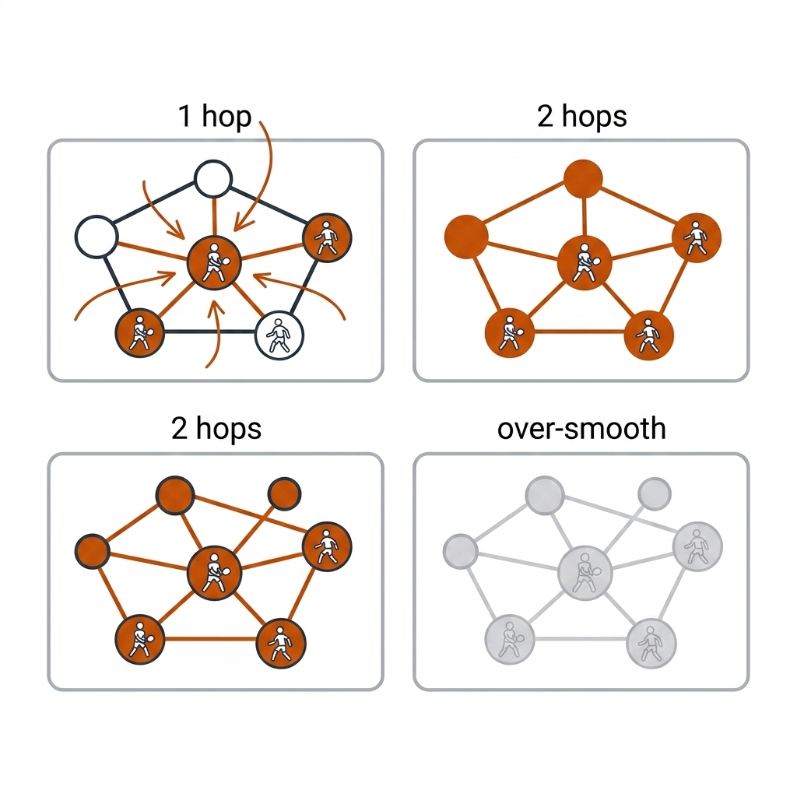
UC 10 — Graph-to-Action: The Suggestion Head
A coach on a sideline does not want a probability; they want "move A2 half a metre toward the middle." The suggestion head closes that gap: the generative decoder outputs a per-node position delta $\Delta \mathbf{p}_i$ plus the predicted threat change, and the output contract handed downstream is the tuple $(\Delta \mathbf{p}, \Delta \text{threat}, \Sigma)$ — action, expected effect, and the ensemble covariance that tells the consumer how much to trust it. The E12 artifact is the measured instance: shift A2 +0.35 m toward the centreline, threat 0.64 → 0.22, a 65.6% reduction at 3.4 ms latency — on one clip, so per section 23.5 it is a hypothesis with a pulse, not a product spec. C22 consumes the tuple as value input; C28 renders it as the live suggestion card. The payoff is the only tactical output a sideline can use at speed: an action, a number, and an honest error bar.
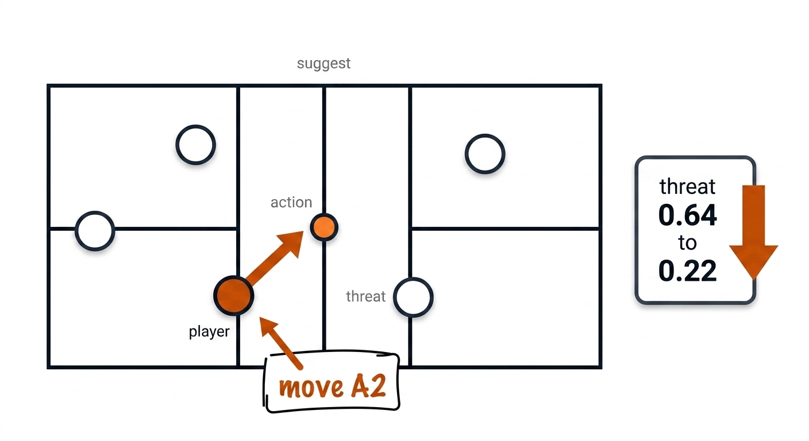
23.9c The Tactical-ML Ecosystem and a Runnable Skeleton
The stack around the model is small and mature; the choice that matters is where equivariance lives. PyTorch Geometric carries the message-passing layers; the equivariance libraries carry the symmetry; GATv2 is the attention layer TacticAI itself builds on.
| Library | Role in the stack | Pickleball use | Rugby league use | Label |
|---|---|---|---|---|
| PyTorch Geometric | Message-passing layers, graph batching | 5-node doubles graph, real-time on M4 (3.4 ms measured) | 14-node team-centric graph | source-backed |
| GATv2 (PyG conv) | Dynamic attention layer — TacticAI's base | Receiver + threat heads | Line-break probability head | source-backed |
| e3nn | E(3)/SE(3)-equivariant layers | 3D extension once C11 pose adds height | Aerial contest and kick geometry | source-backed |
| ESCNN | E(2)-equivariant CNNs for court imagery | Reflection-safe court features | Reflection-safe pitch features | source-backed |
| DGL | Alternative GNN framework, sparse-graph kernels | — | Batched match graphs at scale | source-backed |
| TacticAI reference | The benchmark architecture (D₂ group convs, dual head) | E12 adaptation (measured, n = 1 clip) | Proposed adaptation | [verify] transfer |
The skeleton below is the whole doubles pipeline in miniature — graph build, equivariant encoder, the three heads, and the honesty harness. It runs on the M4 Max as written; the rugby version changes the node count and the edge rule, nothing else.
import torch
from torch_geometric.nn import GATv2Conv
# 1. Build the doubles graph (one frame)
# nodes: A1, A2, B1, B2, ball -> features [x, y, vx, vy, h, team]
x = load_frame() # [5, F], zero-centred on 13.41 x 6.10 m court
edge_index = fully_connected(5) # K5: 10 edges, both directions
edge_attr = relative_features(x) # [dx, dy, dist, dvx, dvy, relation]
# 2. E(2) encoder: four reflected views, mixed every layer
class E2Encoder(torch.nn.Module):
def __init__(self, F=6, H=16):
super().__init__()
self.conv1 = GATv2Conv(F, H, heads=4, edge_dim=6)
self.conv2 = GATv2Conv(H * 4, H, heads=1, edge_dim=6)
def forward(self, views, edge_index, edge_attr):
# views: [4, 5, F] = id, h-mirror, v-mirror, both
# (reflect velocities WITH the coordinates or the test fails)
return torch.stack([
self.conv2(torch.relu(self.conv1(v, edge_index, edge_attr)),
edge_index, edge_attr)
for v in views
])
# 3. Heads — the invariant/equivariant split is the whole game
# receiver (invariant): softmax over nodes, frame-average the 4 views
# threat (invariant): mean-pool -> MLP -> sigmoid, frame-average
# suggest (equivariant): identity view ONLY -> per-node delta-p
# (frame-averaging the suggestion head averages away the geometry)
# 4. The honesty harness (not optional)
# splits: rally-boundary 5-fold CV, never frame-level
# baselines: always-near-player receiver, base-rate threat
# rotation: 6-transform grid; invariant heads match to 1e-6
# ensemble: 5 seeds -> mean + covariance handed to the C22 value model23.9d What This Adds to the Pipeline
The ten use cases are not ten projects; they are the graph layer feeding the chapters around it:
- To C22 (value model): UC 03's action distribution, UC 01's receiver distribution, and UC 10's $(\Delta \mathbf{p}, \Delta \text{threat}, \Sigma)$ tuple — the value model prices distributions and covariances, never point estimates.
- To C28 (cockpit): UC 02's partner-spacing edge and UC 04's line-shape edges are exactly the seam-alert and DLSM dog-leg metrics the live cockpit renders; chapter 23 supplies the model, chapter 28 the screen.
- From C09 and C12: UC 05 and UC 06 consume the tracking layer's player node positions (C09) and the ball node's state (C12); the graph is only ever as good as those feeds.
- To C24 (simulation): UC 07's counterfactual shotgun is the small-scale, single-frame instance of the chapter 24 digital twin — same counterfactual logic, cheaper machine.
- Under C20 (statistics): UC 08's rotation grid, the rally-boundary splits, and the ensemble covariance are the chapter 20 discipline applied to graphs — the honest labels on every use case above are its terms.
23.10 The Tactical-ML Recipe
- Splits: rally-boundary train/test, NEVER frame-level. Season data: hold out matches. Cross-opponent claims: hold out teams.
- Baselines: trivial heuristics (always-near-player receiver, base-rate threat) and the coin flip — build them first, publish them always. A GNN that does not beat a one-line heuristic is a one-line heuristic with a power bill.
- Rotation test: the six-transformation grid, 180° invariance minimum — or document the non-equivariance on the record.
- Uncertainty: MC dropout minimum, 5-model ensemble if the forecast feeds a value model; hand over the covariance, not the mean.
- Interpretation: position heat and edge attention, explained as explanation, never as cause.
- Honest framing: n=1 clip = hypothesis, not product spec. Report CV mean ± std, the cluster bootstrap CI, and the sign-test p-value next to every headline number.
23.11 What I Would Measure Next
- The horizon-decay curve (accuracy vs forecast horizon at +0.5/1/2/4/8s) — the practitioner's boundary chart, measured per sport, per task. The single most useful figure this chapter could add with real data.
- Multi-clip E12 re-run: 8-10 labelled pickleball clips, rally-boundary 5-fold CV, trivial baselines on the table, CIs on everything — the honest GNN evaluation that turns the proof-of-concept into a claim.
- The trivial-baseline gap: always-near-player receiver accuracy on the same splits. If it sits above 0.75, the GNN's real contribution is the threat head and the generative counterfactuals, not receiver prediction — and the chapter should say so.
- Rugby team-centric prototype: a 14-node attack-shape graph over nrl-001 events plus synthetic tracking, compared against the Sawczuk EPV surface as a sanity prior; explicit re-estimation note for the six-again era.
- Coach validation of the attention view: whether position-heat explanations change a real coach's decision on real rallies. Attention maps are plausible; plausibility is not validation.
23.12 Sources
- TacticAI (Zhe Wang, Petar Veličković, Daniel Hennes et al., "TacticAI: an AI assistant for football tactics", Nature Communications 2024, doi: 10.1038/s41467-024-45965-x, PMC10951310, preprint arXiv 2310.10553); DeepMind blog deepmind.google/blog/tacticai; Palmeiras/CBF live deployment June 2026 [verify].
- Equivariance foundations: Satorras, Hoogeboom & Welling, "E(n) Equivariant Graph Neural Networks", arXiv 2102.09844; Fuchs et al., "SE(3)-Transformers", arXiv 2002.12853; Cohen & Welling, "Group Equivariant Convolutional Networks", arXiv 1602.07576; Brody et al., GATv2, arXiv 2105.14491.
- Rugby league EPV anchors: Kempton et al. 2016 (J Sports Sci, doi: 10.1080/02640414.2015.1022578, 768 matches); Sawczuk et al. 2021 (Super League, pre-six-again) and 2024 (NRL Bayesian-mixture EPV, arXiv 2212.10904).
- E12 artifact (experiments/e12-tacticai-doubles/outputs/metrics.json) — the verified numbers; claims register C-19.
- Lab:
lab/w5_lab_tactical_ml.py→experiments/c23-tactical-ml/outputs/metrics.json(CV mean 0.836 ± 0.032; rotation test FAILS naive layer; sample-size check 3,416 rows / 1 clip / 4 players).